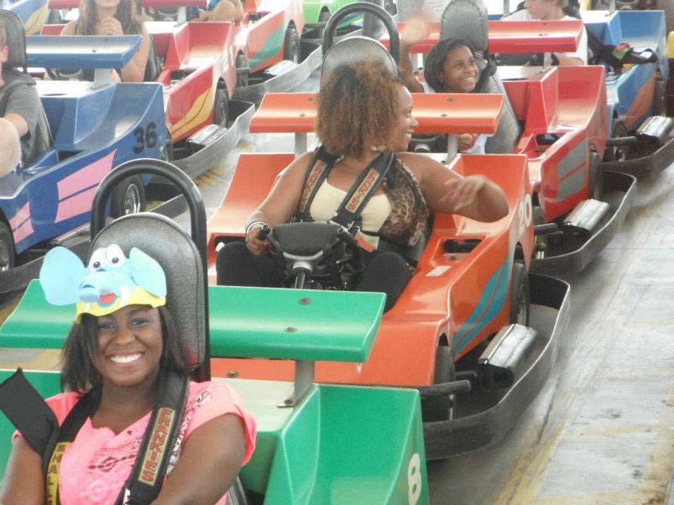

Hello, my name is Jordan Dixon, but most people call me Danni!
I was born June 26 and I'm 26 years old currently, but by the time you're seeing this I'll be 27! I'm the oldest of two siblings; I have a sister who is 20 years old and a brother that's 15 years old. I am a North Carolina native originally from a small town by the name of Rocky Mount. At 5 we moved to the RDU area and I've lived around/near there ever since. So far I've lived in Cary, Garner, Raleigh, and have been residing in Clayton since the beginning of the pandemic. As someone who's only ever lived in North Carolina, I've always dreamed of traveling the world. As a result, Amazing Race, Alone, and Survivor became some of my favorite television shows because I get to see different parts of the world that I'll likely never get the chance to visit myself.
I graduated with the class of 2014 at Leesville Road High and then began working on my Associates in Science Degree at Wake Technical Community College while also working full time at my first ever job, Dunkin Donuts. Unfortunately, I ignored the advice of of those closest to me and ended up putting too much on my plate at once and was therefore unsuccessful at my first college endeavor. Now, however, I have returned to Wake Tech with a vengence and I am currently pursuing a Cybersecurity degree.
I look forward to sharing more about myself with you!